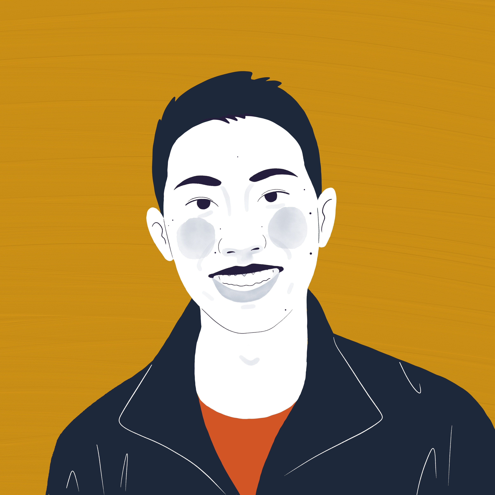

---
# Feel free to add content and custom Front Matter to this file.
# To modify the layout, see https://jekyllrb.com/docs/themes/#overriding-theme-defaults
layout: default
---

Hi there! I'm Phillip.
Currently, I'm a full-stack software engineer at
Asana in NYC, where I work on our Goals
product. Previously, I graduated from
Harvard in 2019 and interned at
Biogen and
Microsoft.
Recently, I've been:
- 🇨🇳 Improving my Chinese
- 🎾 Working on my tennis serve
- 🍳 Exploring NYC's food scene
- 🎮 Getting every character into Elite Smash
This website is an opportunity for me to write random stuff and explore side
projects. Poke around and drop me a note if you'd like!